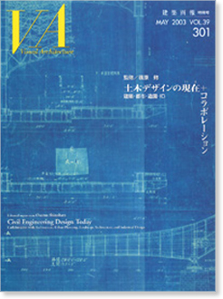

当サイトはJavaScriptをonにしてご覧ください。

MAY 2003 VOL.39 301
監修／篠原 修
土木デザインの
現在
(
いま
)
＋コラボレーション
建築・都市・造園・ID
特別定価 3,740円（税込）
ISBN 4-901772-09-0
論説 土木デザインの現在
篠原 修（東京大学大学院工学系研究科社会基盤工学専攻 教授・土木設計家）
トータリティを目指して
苫田ダム
デザインのトータリティ
堤体のデザイン
水辺のデザイン
河畔の公園と広場
橋梁群のデザイン
管理庁舎のデザイン
座談会
土木デザインとコラボレーション
篠原 修
（東京大学大学院工学系研究科社会基盤工学専攻 教授・土木設計家）
内藤 廣
（東京大学大学院工学系研究科社会基盤工学専攻 教授・建築家）
佐々木政雄
（アトリエ74建築都市計画研究所 代表・都市計画家）
小野寺 康
（小野寺康都市設計事務所 代表・都市デザイナー）
Projects
旭川駅周辺
全体のプランニング
ランドスケープデザイン
旭川駅舎のデザイン
鉄道高架橋（本線・富良野線）のデザイン
桑名歴みち
全体のプランニング
住吉入江 歴史の継承と創造
桑名外堀のデザイン・西諸戸邸
係留・照明・玉重橋のデザイン
日向市駅周辺
全体のプランニング
小学校における「まちづくり課外授業」
日向市駅舎のデザイン
日向市駅舎の構造について
鉄道高架のデザインについて
塩見橋橋面のデザイン
「十街区」ストリートファニチャー
活躍するエンジニア・アーキテクト
～近代から現代～
エンジニア・アーキテクトの原点 中井 祐（東京大学大学院工学系研究科社会基盤工学専攻 講師）
小野寺康 ／ 西村 浩 ／ 寺田和己 ／ 南雲勝志 ／ 岡田一天 ／ 伊藤 登
中井 祐 ／ 大野美代子 ／ 向山辰夫 ／ 高楊裕幸 ／ 畑山義人 ／ 浅野 清
鈴木 圭 ／ 関 文夫 ／ 後藤嘉夫 ／ 伊藤清忠 ／ 田村幸久 ／ 志村 勉
土木学会デザイン賞の創設 福井恒明（東京大学大学院工学系研究科 景観研究室）
VA Column：編集顧問インタビュー「人から人へ」Vol.22 宮本忠長（宮本忠長建築設計事務所 代表取締役所長）
VA BOOKS：
『ヨーロッパ文化史紀行』『世界の歴史を考える－西欧四千年史と日本－』原 守久著
阿部興治（阿部興治建築研究所 所長）
VA NEWS